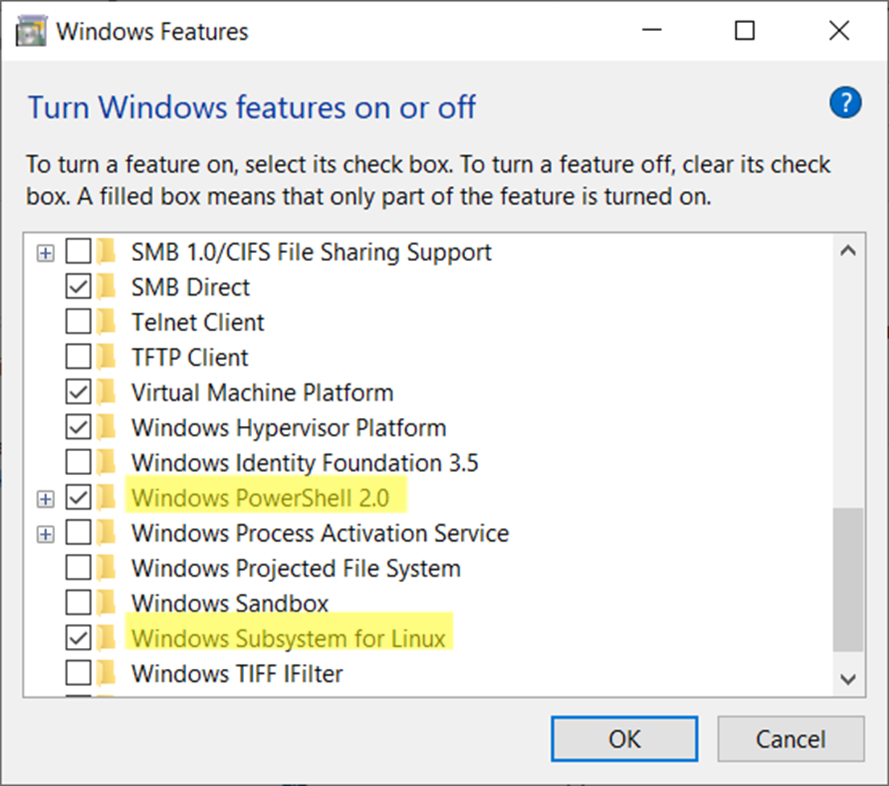
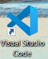
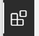
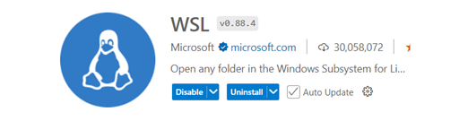
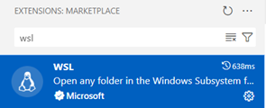
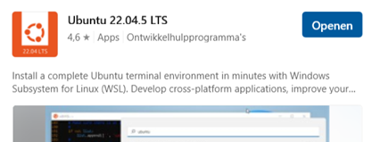
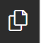
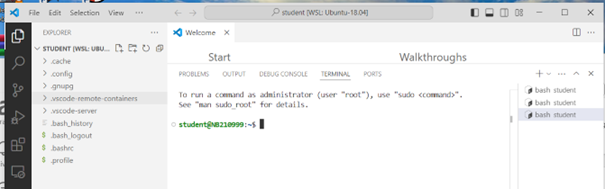

Windows Subsystem for Lunix(WSL) Handleiding
Introductie
Dit Handleiding beschrijft hoe je Linux/Ubuntu applicaties kunt ontwikkelen in Windows met gebruik van het Windows Subsystem for Linux(WSL) en Visual Code. Dit is een alternatieve werkwijze voor het gebruik van Docker.
Er worden een aantal scenario’s beschreven:
Ubuntu 18/20/22/24 WSL-native (dus zonder toegevoegde applicaties)
Ubuntu 18.04 met ROS-Melodic integratie
Ubuntu 22.04 met ROS-Humble integratie
Ubuntu 24.04 met ROS-Fuzzy integratie
p.s. Voor meer complexe applicaties welke bestaan uit onderling communicerende nodes/processen/containers wordt aanbevolen om Docker(DevContainers) te gebruiken. Docker valt buiten de scope van dit document.
Voorbereiden Windows voor WSL
Volg de volgende handelingen om WSL in Windows beschikbaar te maken
Open in Windows het “Program and Features” control panel
“Turn Windows features on or off” (rechter zijde control panel)
Zet de volgende features aan:
Windows PowerShell 2.0
Windows Subsystem for Linux

Installatie Visual Studio Code(VSC)
Volg de volgende handelingen om Visual Studio Code te installeren
Installeer VSC door de gedownloade executable (t VSCodeUserSetup-x64-x.xx.x .exe) te starten
Op de installatie het VSC programma

Installer in VSC WSL support
Open de Marketplace(extentions)

Selecteer WSL

Zorg ervoor dat in het linker paneel WSL geïnstalleerd is en ge-enabled

Sluit VSC af
Verkrijgen WSL distributie
Ubuntu 18/20/22/24 WSL-native (dus zonder toegevoegde applicaties)
Gebruik de “Microsoft Store” om je gewenste distributie te downloaden
Ga naar “Apps”
Zoek op “Ubuntu”
Selecteer jou gewenste versie van Ubuntu en klik op “Installeer”
Vervolg “Starten WSL Distributie(eerste keer)”
De volgend distributies zijn al voor bereid en kun je downloaden vanaf: Download link
Ubuntu 18.04 met ROS-Melodic integratie
Ubuntu 22.04 met ROS-Humble integratie
Ubuntu 24.04 met ROS-Fuzzy integratie
Ubuntu 18.04 met ROS-Melodic integratie
Download het Ubuntu-18.04-AvansRosMelodic.tar bestand op een voor jou bekende plaats (<jou locatie>).
Start “PowerShell” (start-menu via Windows Start)
Voor het volgende commando uit in Powershell
wsl --import Ubuntu-18.04-AvansRosMelodic <drive>:/Ubuntu-18.04-AvansRosMelodic <jou locatie>/Ubuntu-18.04-AvansRosMelodic.tar
Ubuntu 22.04 met ROS-Humble integratie
Download het Ubuntu-22.04-AvansRosHumble.tar bestand op een voor jou bekende plaats (<jou locatie>).
Voor het volgende commando uit in Powershell
wsl --import Ubuntu-22.04-AvansRosHumble <drive>:/Ubuntu-22.04-AvansRosHumble <jou locatie>/Ubuntu-22.04-AvansRosHumble.tar
Voor grote projecten is deze integratie ook beschikbaar in Docker. Zie: Github link
Ubuntu 24.04 met ROS-Jazzy integratie
Download het Ubuntu-24.04-AvansRosJazzy.tar bestand op een voor jou bekende plaats (<jou locatie>).
Voor het volgende commando uit in Powershell
wsl --import Ubuntu-24.04-AvansRosJazzy <drive>:/Ubuntu-24.04-AvansRosJazzy <jou locatie>/Ubuntu-24.04-AvansRosJazzy.tar
Voor grote projecten is deze integratie ook beschikbaar in Docker. Zie: Github link
Starten WSL Distributie(eerste keer)
Opmerking: Deze stap kan worden overgeslagen bij de voor geconfigureerde distributies van Avans
Vanuit de “Microsoft Store” beweeg je je muis over de geïnstalleerde distributie

Klik met je muis op Open/Openen
Voer een gebruikersnaam(zelf bedacht, in kleine letters) in, wanneer daarom wordt gevraagd
Voer een wachtwoord(2x) in wanneer daarom wordt gevraagd (onthoud dit wachtwoord).
Wacht op de melding “Installation successful!”
Sluit de terminal af met het “logout” commando.
Starten WSL Distributie vanuit Visual Code
Voer de volgende handelingen uit om de WSL-distributie te openen in Visual Studie Code om van daaruit je linux/applicatie te ontwikkelen
Start VSC
Open de Command Palette door de toets F1
Type in de Command Pallette WSL
Selecteer “WSL: Connect WSL using distro…” en selecteer jou geïnstalleerde WSL distributie
Open een terminal
Menu van VSC; TerminalNew Terminal
Toet combinatie “Shift”+ “Ctrl” +”`”
Opmerking: je kunt meerdere terminals gelijktijdig openen, een lijst van geopende terminals vind je aan de linker zijde van het terminal-paneel
Open de bestands verkenner
Open het bestandsverkenner(Explorer) met het volgende icoon

* Kies open Folder, select
* /home/student/
* /home/<mijn gebruikersnaam>
De layout van VSC ziet er dan als volgt uit

De volgende gegevens zijn van belang bij het inloggen van een voor geconfigureerde distributie
Gebruikersnaam: student
Wachtwoord: Geheim! (gebruik dit wachtwoord ook bij sudo opdrachten)
Applicatie ontwikkeling
Je kunt nu applicaties in Python/C/C++/Java etc. ontwikkelen. Je dient echter wel in de distributie eerst de juiste programma’s/compilers/bibliotheken daarvoor te installeren. Je kunt dit doen met het Linux “apt” commando of voor b.v. Python-bibliotheken met het “pip” of “pip3” commando.
Koppelen USB-devices aan WSL-Distributie
Als je USB devices wilt gebruiken in je WSL-distributie dan moeten deze worden “geforward” van windows naar WSL. Hiervoor is de grafische WSL-USB tool beschikbaar. Voer de volgende handelingen uit:
Download het “WSL-USB-x.x.x.msi” bestand van Download link
Installeer het WSL-USB programma met het gedownload bestand.
Start het volgende programma
C:\Program Files\WSL USB\ wsl-usb-gui.exe
Opmerking: helaas is dit niet beschikbaar via het Windows start-menu(je kun wel een snelkoppeling maken naar je desktop)
Volg de instructies op om een USB device te forwarden op de website
Afhankelijk van jou computer/Windows systeemconfiguratie kan meerdere malen gevraagd worden om je Windows gebruikersnaam en wachtwoord in te voeren
Tip: Je kunt de connectie automatisch laten plaatvinden door de “Auto-Attach” functie
Device: Het aangesloten type apparaat op één van de USB poorten wordt met WSL verbonden(Attach), dit is de meest geschikte wijze voor de meeste USB apparaten
Port: Een willekeurig apparaat op een specifieke (fysieke)USB-poort wordt met WSL verbonden(Attach). Gebruik deze methode voor b.v. een OAK depthAI camera, maar houd er dan rekening mee dat deze camera dan altijd op dezelfde fysieke USB poort aangesloten dient te worden.
Vergeet een apparaat of USB-poort te verbreken(Detach) als je het USB apparaat weer onder Windows wilt gebruiken.
Let op: het e.a. kan niet goed werken als TCP port 3240 door de Firewall wordt geblokkeerd (zoek op internet naar een oplossing)
Valkuilen
De volgende valkuilen zijn bekend bij het gebruik van een WSL distributie
Als je een distributie “unregister” met het “wsl –unregister” commando ben je al je bestanden/instellingen/geïnstalleerde programma’s kwijt die in de distributie zijn aangemaakt .
Je kunt je bestanden in de distributie kopiëren met de VSC omgeving doormiddel van copy & past. Beter is om een GIT-repository aan te maken/gebruiken voor je eigen bestanden
Er volgen nog meer….
Referenties Op de volgende websites kun je meer informatie vinden
Overige opmerkingen/Aandachtspunten
Platform IO
Installeer eerst een Python environment:
sudo apt update
sudo apt install python3-venv
Platform IO kan worden toegevoegd worden VSC. Ga daarvoor naar de VSC marketplace(extentions) en zoek op PlatformIO
Wel dient eerst in VSC een wsl distributie te hebben gestart
Het installeren en het voor de eerste keer openen van en PlatformIO project neemt enige tijd in beslag, heb geduld. Wanneer het e.a. goed is opgestart blijkt daarna het e.a. op normale “snelheid” te lopen.
Activeren mirrored network mode(!!!nog niet getest!!!)
Op machines met Windows 11 22H2 en hoger kun je networkingMode=mirrored instellen onder [wsl2] in het .wslconfig bestand om gespiegelde netwerkmodus in te schakelen. Door dit in te schakelen verandert WSL naar een geheel nieuwe netwerkarchitectuur die als doel heeft de netwerkinterfaces die je onder Windows hebt te ‘spiegelen’ in Linux, om nieuwe netwerkfuncties toe te voegen en de compatibiliteit te verbeteren.
Testen versie van windows
Start winver met het run commando in windows:
winver
WSL in mirrord network mode zetten
Start notepad met het run commando in windows:
Bevestig als er gevraagd wordt voor het maken van een nieuw bestand
notepad %userprofile%\.wslconfig
Kopieëer onderstaande tekst in Notepad en sla het bestand op.
[wsl2]
networkingMode=mirrored
Als het bestand al bestaat voeg dan alleen de regel networkingMode=mirrored toe onder de tag [wsl2]
Beëindig alle distributies van wsl (in een Powershell):
wsl --shutdown
Sluit tevens Visual Code af, als deze geopend is.
Wacht minimaal 8 seconden voor je WSL start(vanuit powershell) of Visual Code.